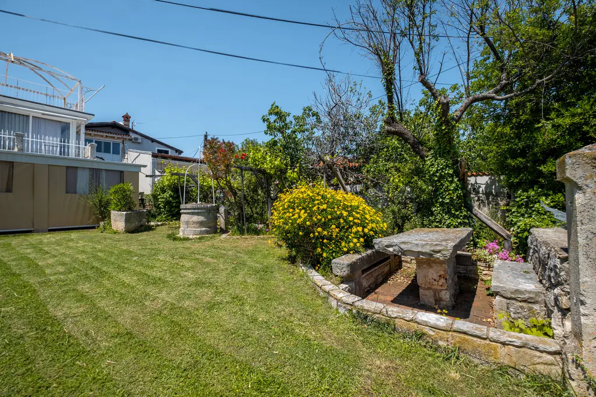
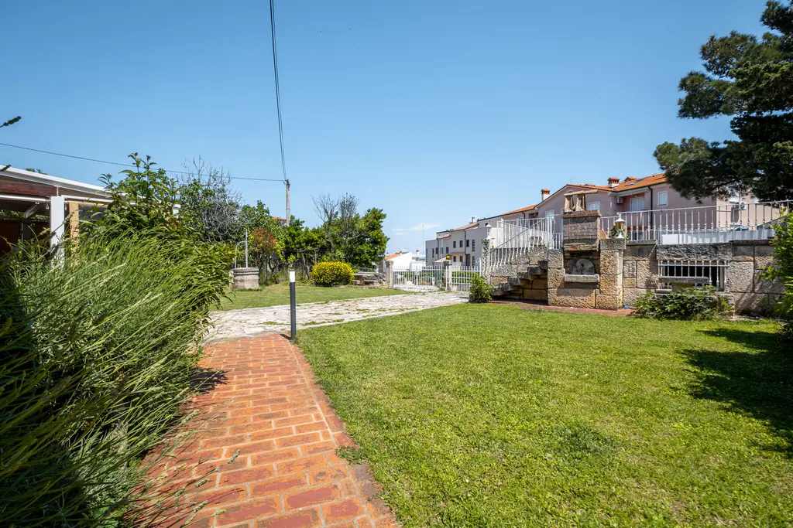
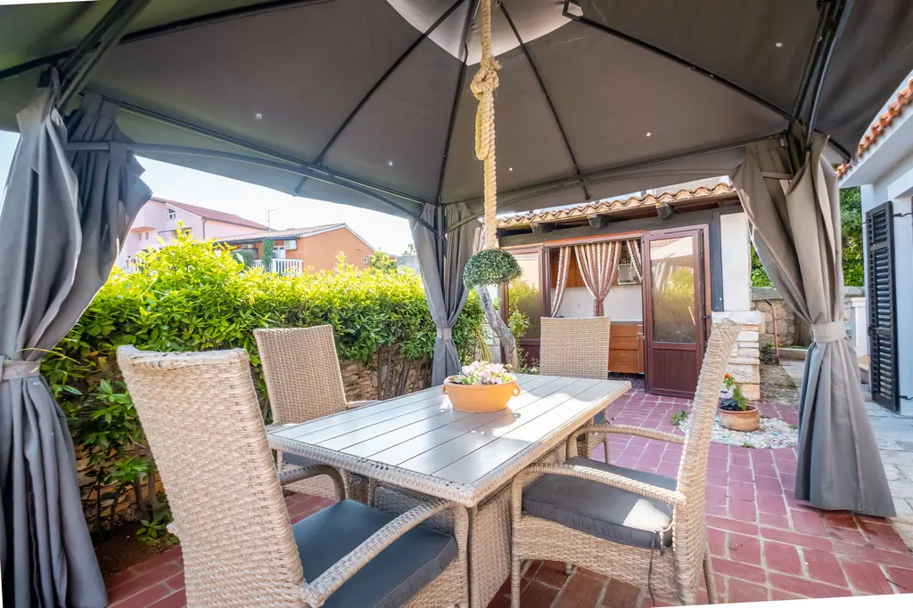
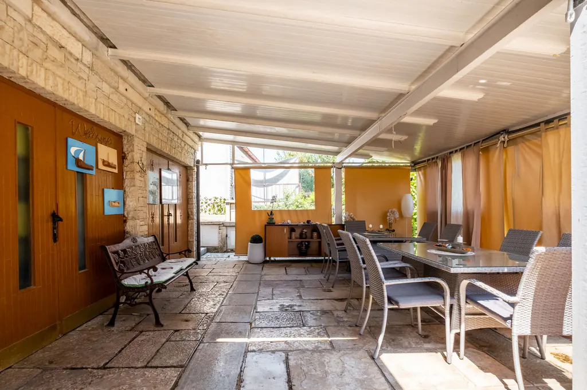
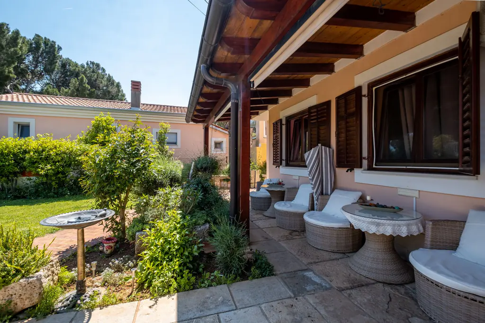
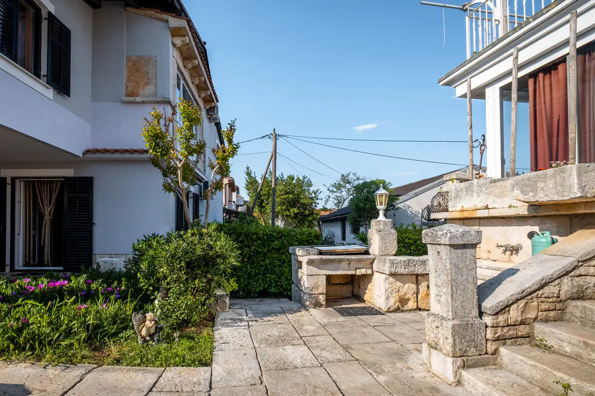
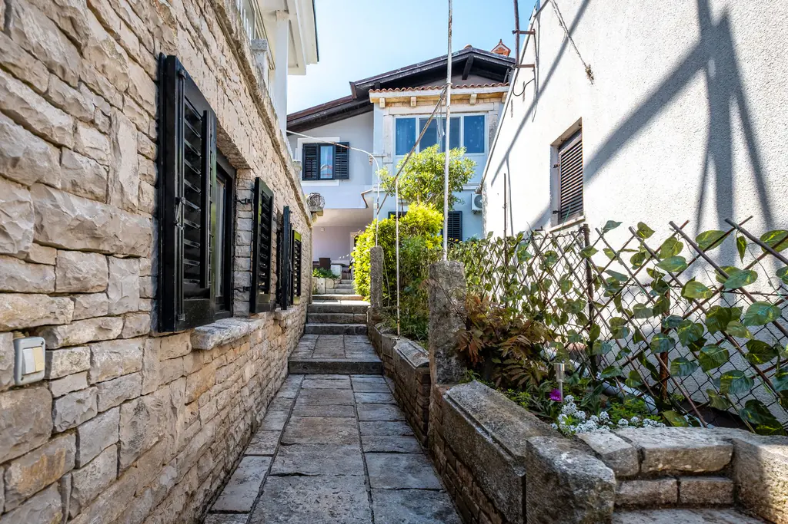
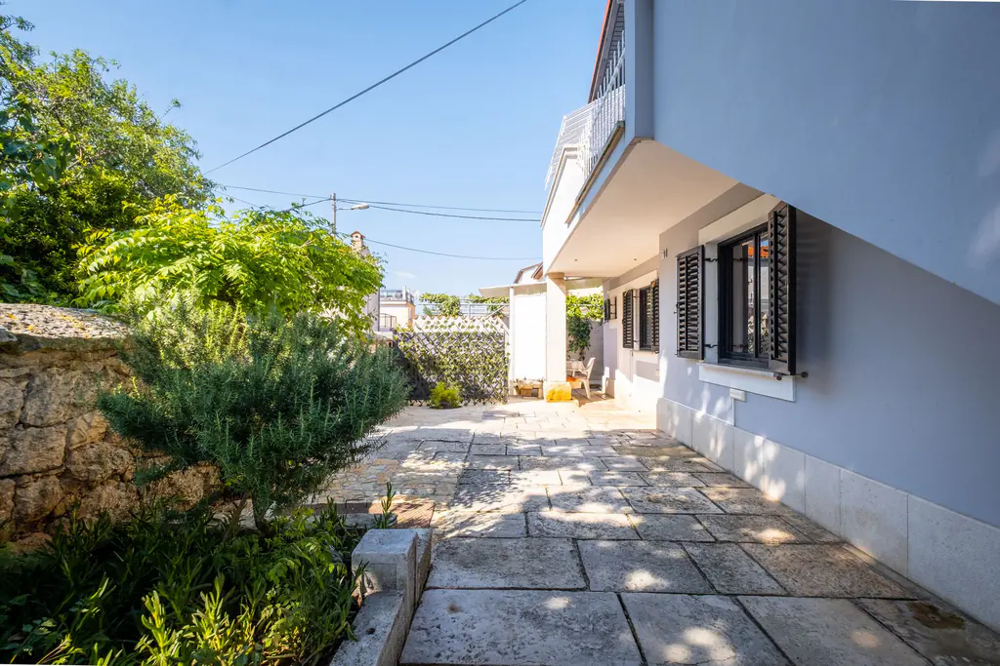
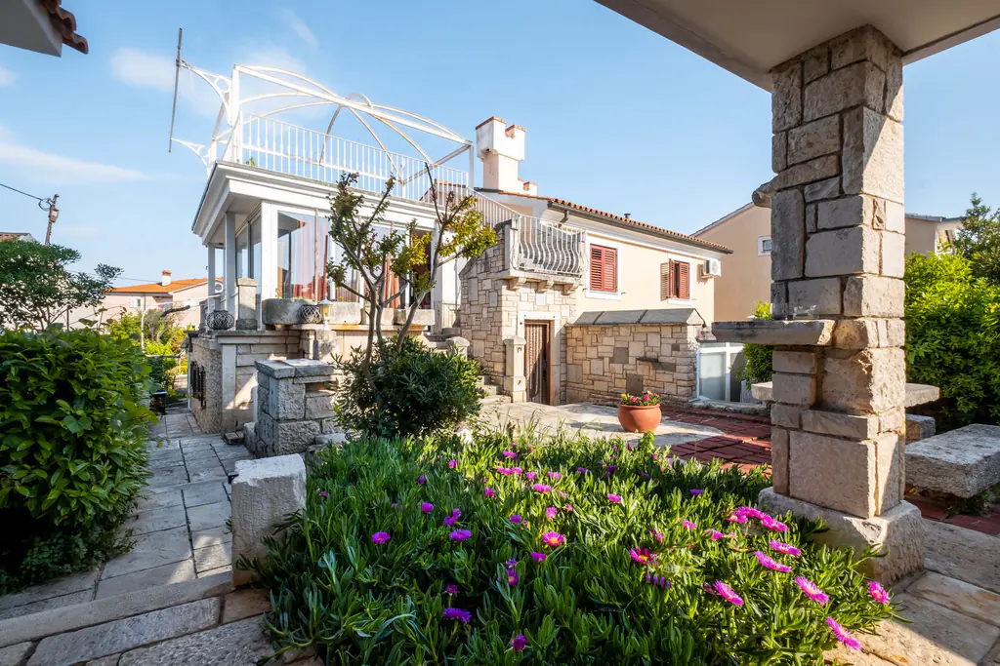
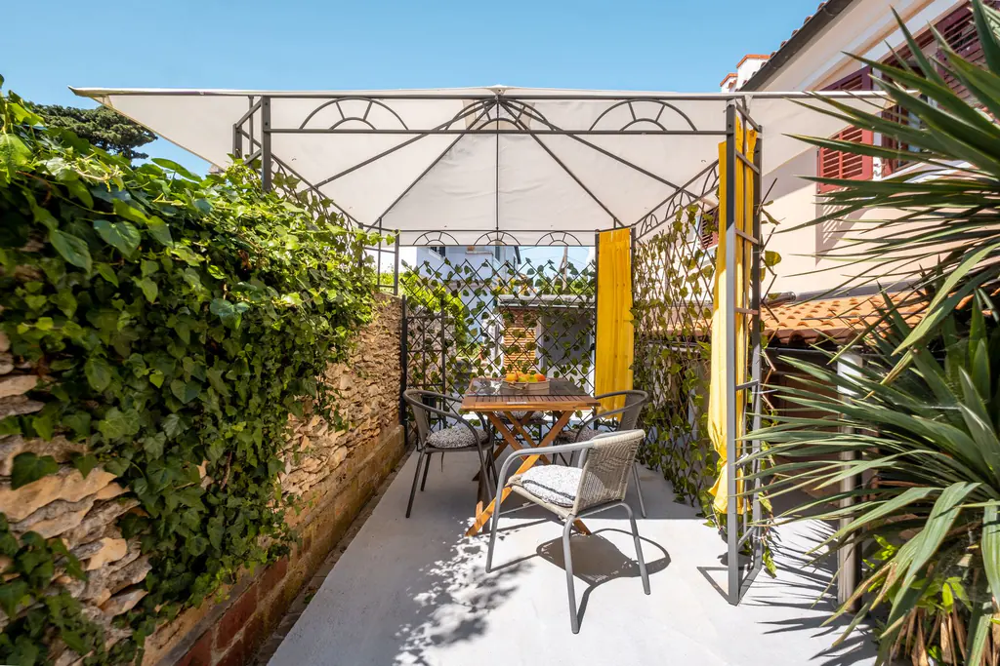
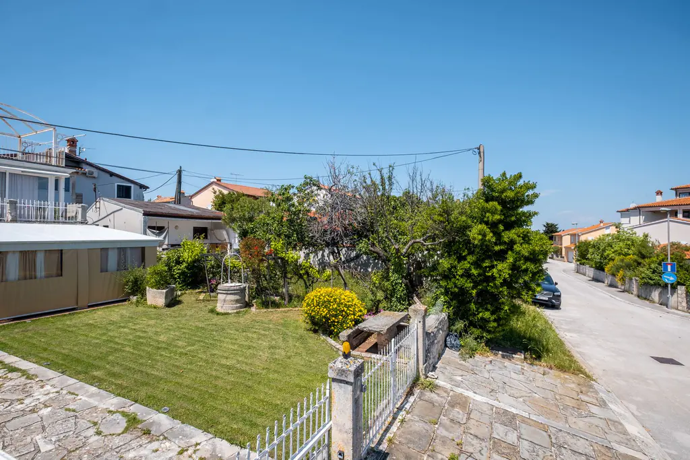
Garden
Step into your Mediterranean paradise
Enjoy a peaceful private garden designed for relaxing outdoor living. Surrounded by lush Mediterranean greenery, the spacious yard features a well-kept lawn, traditional stone details, and several cozy seating areas, perfect for morning coffee or evening gatherings. Guests can dine outdoors under the covered gazebo, prepare meals on the stone barbecue, or simply unwind in the shade while enjoying the tranquil atmosphere. The combination of natural stone, vibrant flowers, and mature trees creates an authentic Mediterranean charm, making it ideal for a relaxing holiday.
Garden Highlights
Everything you need for relaxed outdoor living
Private Garden
Stone BBQ
Covered Gazebo
Seating Areas
Outdoor Dining
Open to All Our Guests
The garden is shared by every apartment. Choose your stay and enjoy it from day one.
View Apartments